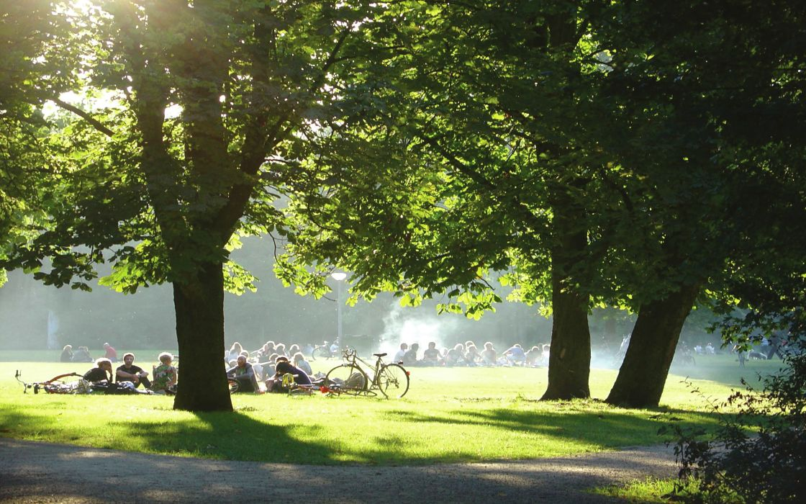
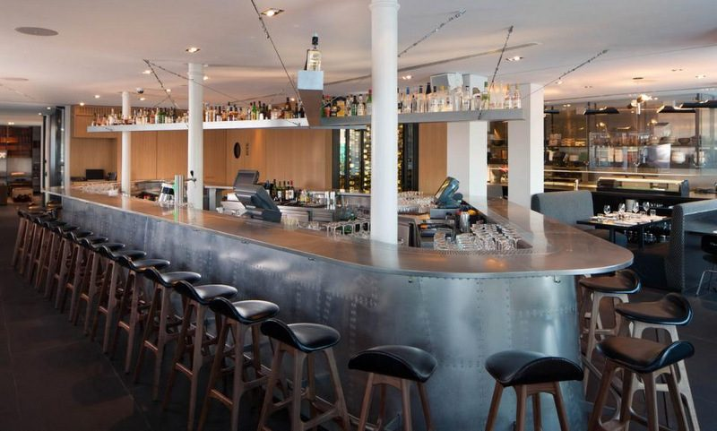
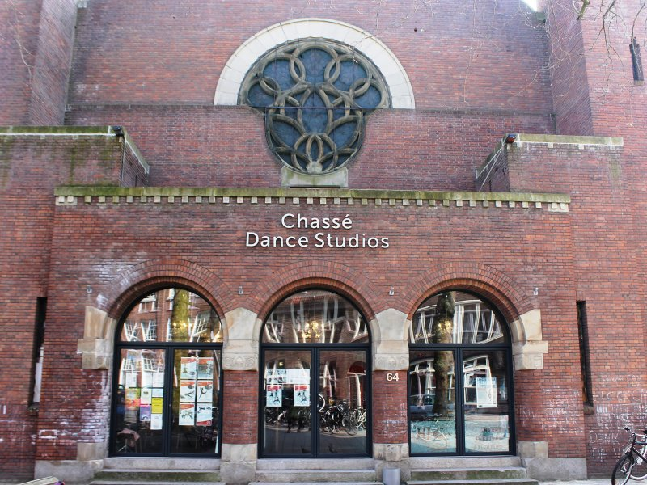

After my Masters in Business Administration - Digital Business in Amsterdam, I figured I wanted to get more knowledge and acquire the skills of coding. To realize this ambition, I went to Le Wagon Barcelona!
Even while I love being in Barcelona, Amsterdam is my favorite city. That's why I would like to share the best recommendations in Amsterdam:
|  |
VONDELPARKThe vondelpark is in the middle of the centre of Amsterdam. I go there at least every week for a run, to walk a bit or have a coffee with friends. You should really go there! |
|  |
IZAKAYAIzakaya is a restaurant where you can find the best and most delicate Japanese food. So if you like Sushi, Sashimi or other Japanese-style dishes, this is a must-go! |
|  |
CHASSE DANCE STUDIOSChasse is the best place to do dance classes. You can find there basically every dancing style teached by very experienced teachers. A place to go if you like HipHop, Ballet, Dancehall, Modern Dance or any other kind.. |